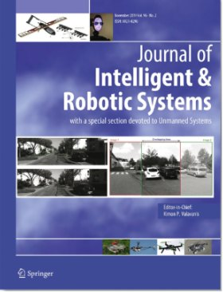
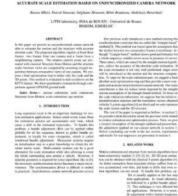

Publications & Patents
Academic work in multi-camera geometry and visual odometry, alongside applied Computer Vision inventions.
Academic Publications

Asynchronous Structure from Motion at Scale
R. Mhiri, S. Ouerghi, R. Boutteau, P. Vasseur, S. Mousset, A. Bensrhair
Journal of Intelligent & Robotic Systems · 2019

Accurate Scale Estimation Based on Unsynchronized Camera Network
R. Mhiri, P. Vasseur, S. Mousset, R. Boutteau, A. Bensrhair
IEEE International Conference on Image Processing (ICIP) · 2015
Obstacle Detection Using Unsynchronized Multi-Camera Network
R. Mhiri, H. Maiza, S. Mousset, K. Taouil, P. Vasseur, A. Bensrhair
Ubiquitous Robots and Ambient Intelligence (URAI) · 2015
Visual Odometry with Unsynchronized Multi-Cameras Setup for Intelligent Vehicle Application
R. Mhiri, P. Vasseur, S. Mousset, R. Boutteau, A. Bensrhair
IEEE Intelligent Vehicles Symposium (IV) · 2014
Research videos: Video 1 · Video 2
Complete bibliography: DBLP
Patents
Systems and Methods for Object Detection in Spherical Videos
GoPro, Inc. · US Patent 12,456,159 · 2025
Systems and Methods for Inserting Content into Videos
GoPro, Inc. · US Patent 12,294,762 · 2025
Facilitating User Selection of Trackable Objects in Video Content
GoPro, Inc. · US Patent Application 20260278986 · 2026